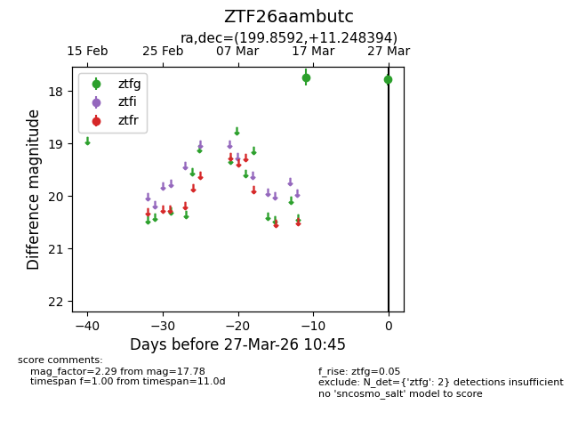
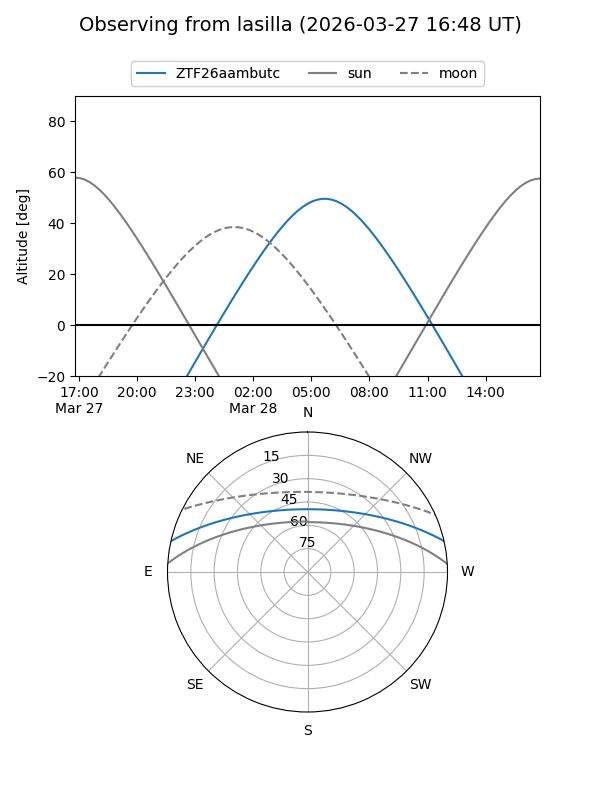
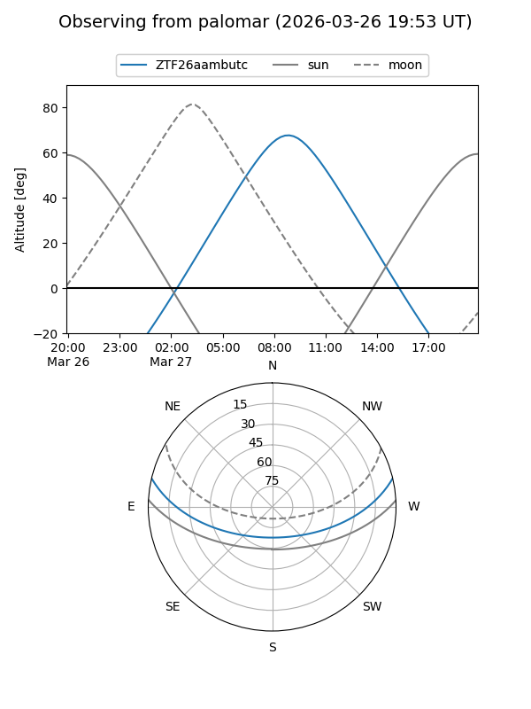

ZTF26aambutc
Target ZTF26aambutc at 2026-03-27 10:48
Aliases and brokers:
FINK: link
Lasair: link
ALeRCE: link
alt names
ZTF26aambutc (ztf,fink_ztf)
Coordinates:
equatorial (ra, dec) = 199.8592,+11.24839
equatorial (HMS+DMS) = 13:19:26.22,+11:14:54.22
galactic (l, b) = (326.7875,+72.81031)
Flags:
Photometry:
last ztfg=17.78
2 ztfg detections
Lightcurve

Visibility


Additional plots